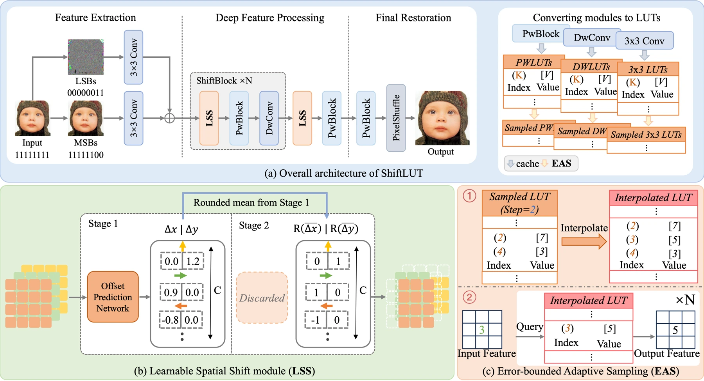
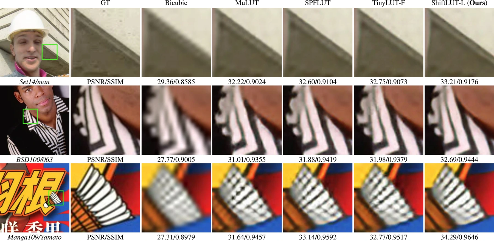

A look-up table is one of the cheapest ways to do image restoration: precompute the mapping from a local patch to an output value, then index it at inference. The reason it is cheap is also its limitation — a pointwise table sees almost no spatial context.
查找表是最省的图像恢复实现方式之一：预先算好从局部图像块到输出值的映射，推理时直接查表。它便宜的原因也正是它的局限——逐点的表几乎看不到任何空间上下文。
The obvious remedy is a bigger table indexed by a bigger neighbourhood, and that is where the cost explodes. Entries grow combinatorially with the number of input pixels used, so storage and latency climb together, and the last few years of LUT work have largely been trading efficiency for receptive field.
直觉的补救是用更大的邻域去索引更大的表，而成本正是在这里爆炸的。表项数量随所用输入像素数呈组合式增长，存储与延迟同步上升；过去几年 LUT 方向的工作，很大程度上就是在拿效率换感受野。
ShiftLUT goes at all three costs at once and reports the largest receptive field among LUT methods — 3.8× that of TinyLUT — while improving average PSNR by more than 0.21 dB and reducing both storage and runtime in the reported configuration.
ShiftLUT 同时向三项成本下手，并报告了 LUT 类方法中最大的感受野——TinyLUT 的 3.8 倍——同时在所报配置下把平均 PSNR 提升 0.21 dB 以上，并同时降低存储与运行时间。
Context without a bigger table: a learnable spatial shift applies channel-wise offsets to the feature map, so information from other positions reaches each channel before the lookup instead of being indexed by a larger neighbourhood.
不放大表也能获得上下文：可学习的空间移位对特征图施加逐通道偏移，让来自其他位置的信息在查表之前就进入各通道，而不是靠更大的邻域去索引。
An asymmetric two-branch architecture gives more computation to the information-dense branch, and error-bounded adaptive sampling compresses feature-level tables with a bound on interpolation error — storage, not just FLOPs, is treated as a budget.
非对称双分支把更多计算分配给信息密集的分支；误差有界自适应采样则在给出插值误差上界的前提下压缩特征级表——存储与 FLOPs 一样被视为预算。
On Manga109, ShiftLUT-L reaches 29.16 dB against TinyLUT-F at 28.83 dB, with reported storage falling from 171 KB to 104 KB and runtime from 146 ms to 84 ms on a Snapdragon 888 at 320×180.
在 Manga109 上，ShiftLUT-L 达到 29.16 dB，TinyLUT-F 为 28.83 dB；报告的存储从 171 KB 降至 104 KB，骁龙 888 上 320×180 输入的运行时间从 146 ms 降至 84 ms。
Moving context instead of enlarging tables移动上下文，而不是放大查找表
The first component is a learnable spatial shift. Rather than index a table with a larger patch, the network shifts feature channels by learnable offsets before the lookup, so different channels carry information from different positions and the effective receptive field grows without the table growing.
第一个组件是可学习的空间移位。它不是用更大的图像块去索引表，而是在查表之前让网络按可学习的偏移移动特征通道，于是不同通道携带来自不同位置的信息——有效感受野变大了，而表并没有变大。
This is a reallocation rather than an addition. A shift costs almost nothing — it is an index manipulation, not a convolution — so the context is paid for in memory layout rather than in multiply-accumulates. Per-channel offsets let the network decide how far each channel should look.
这是重新分配，而非额外增加。移位的成本几乎为零——它是索引操作，不是卷积——因此上下文是用内存布局而不是乘加运算换来的。逐通道的偏移让网络自行决定每个通道应当看多远。
The second component accepts that the two branches do not carry equal information. An asymmetric dual-branch architecture gives more computation to the information-dense branch instead of splitting capacity evenly, which lowers latency without the quality drop a symmetric cut would cause.
第二个组件承认了两个分支承载的信息并不等量。非对称双分支把更多计算分配给信息密集的那个分支，而不是平均切分容量，从而在不引发对称裁剪必然带来的质量下降的前提下降低延迟。


Storage is a budget too存储同样是一份预算
The third component addresses a cost that FLOP counts hide. On an edge device the table itself has to live in memory, and error-bounded adaptive sampling compresses it by sampling the table non-uniformly with a bound on the resulting interpolation error.
第三个组件处理的是 FLOPs 统计会掩盖的一项成本。在端侧设备上，表本身必须占用内存；误差有界自适应采样通过对表做非均匀采样、并给出由此产生的插值误差上界来实现压缩。
The bound is the point. Downsampling a LUT uniformly is easy but degrades outputs unpredictably; sampling adaptively under an error bound turns compression into a controlled trade between storage and maximum error rather than a guess.
关键在于这个上界。对 LUT 做均匀下采样很省事，但会以不可预测的方式劣化输出；在误差上界约束下做自适应采样，则把压缩变成一项在存储与最大误差之间的可控交易，而不是一次碰运气。
Treating storage, latency and quality as one budget is what separates this from a PSNR paper. The small, medium and large variants exist so that a deployment can choose a point on that surface instead of inheriting the researcher’s.
把存储、延迟与质量当作同一份预算来处理，正是这项工作区别于一篇 PSNR 论文的地方。小、中、大三个变体的存在，是为了让部署方能在这张曲面上自行选点，而不是被动接受研究者选定的那一点。
Reading the measurements如何读这些测量
Evaluation covers 4× super-resolution, denoising and JPEG deblocking, with PSNR and SSIM on the luminance channel across standard SR datasets, plus a runtime measurement from an Android implementation on a Snapdragon 888 at 320×180 input.
评测覆盖 4× 超分辨率、去噪与 JPEG 去块效应，在标准超分数据集上统计亮度通道的 PSNR 与 SSIM，并给出一份 Android 实现的运行时间——骁龙 888、320×180 输入。
The three tasks matter because receptive field is not equally valuable in each. Deblocking is largely a local operation, while super-resolution benefits most from wider context. Removing the final spatial enlargement stage and still seeing gains is the evidence that the mechanism is not specific to upscaling.
三个任务都很重要，因为感受野在其中的价值并不相同。去块效应大体是个局部操作，而超分辨率最能从更宽的上下文中获益。去掉最后的空间放大阶段仍能观察到增益，正是该机制并非专为上采样而设计的证据。
The comparison worth keeping in view is Manga109: 29.16 dB against TinyLUT-F’s 28.83 dB, with storage down from 171 KB to 104 KB and runtime down from 146 ms to 84 ms. Better quality with less memory and less time at once is the unusual part — normally you buy one with another.
最值得记住的对比是 Manga109：29.16 dB 对 TinyLUT-F 的 28.83 dB，存储从 171 KB 降到 104 KB，运行时间从 146 ms 降到 84 ms。质量更好同时内存更少、耗时更短，这才是不寻常的部分——通常你得拿其中一个去换另一个。


Deployment defines the claim部署条件定义了结论的边界
The model family is the contribution. A single best score would tell a deployer nothing, whereas a storage–quality–latency surface with three variants lets one pick a configuration for a specific device and input size.
模型族本身就是贡献。一个单独的最佳分数对部署方毫无用处，而一张带三个变体的存储—质量—延迟曲面，能让人针对具体设备与输入尺寸挑一个配置。
The efficiency claim is scoped by how it was measured. Phone model, input resolution and degradation model all move runtime, and 320×180 is a small frame — the same ratios need not hold at 1080p, where memory traffic behaves differently.
效率结论的边界由它的测量方式决定。手机型号、输入分辨率与退化模型都会改变运行时间，而 320×180 是一个很小的画幅——在 1080p 上，内存访问的行为不同，同样的比例未必成立。
What transfers is the design argument. When a cheap operator is cheap because it sees too little, adding context can be cheaper than enlarging the operator. That reframing is worth more than the 0.21 dB and applies wherever a pointwise module is being stretched to do a spatial job.
可以迁移的是那个设计论证：当一个便宜算子之所以便宜是因为它看得太少时，补充上下文可能比放大算子更便宜。这个重构比那 0.21 dB 更有价值，并且适用于任何把逐点模块硬拉去做空间任务的场合。
Paper & authors
ShiftLUT: Spatial Shift Enhanced Look-Up Tables for Efficient Image Restoration
CVPR 2026
Cite this work
@misc{zeng2026shiftlutspatialshiftenhanced,
title = {ShiftLUT: Spatial Shift Enhanced Look-Up Tables for Efficient Image Restoration},
author = {Xiaolong Zeng
and Yitong Yu
and Shiyao Xiong
and Jinhua Hao
and Ming Sun
and Chao Zhou
and Bin Wang},
year = {2026},
eprint = {2603.00906},
archivePrefix = {arXiv},
primaryClass = {cs.CV},
url = {https://arxiv.org/abs/2603.00906}
}